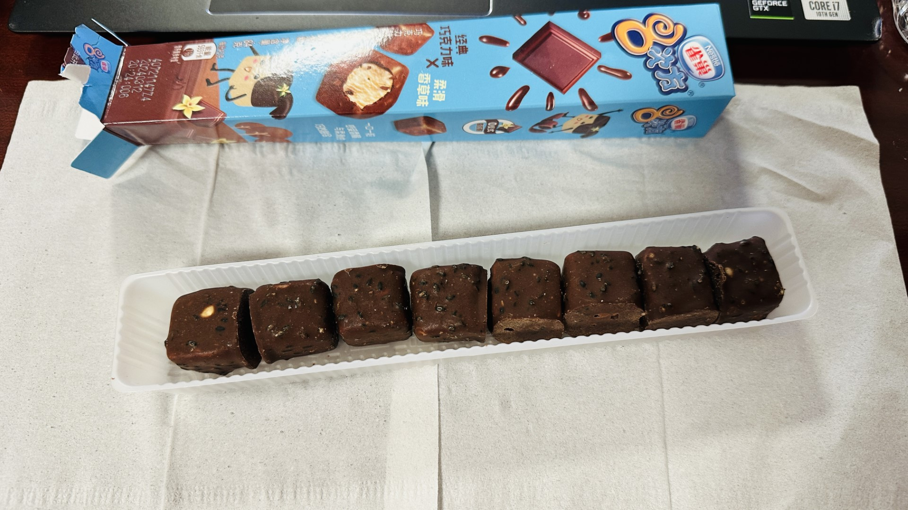

Ice Cream from the local Grocery Store

I had the opportunity to stop for ice cream after classes at night, so visited the local grocery store.
Note that all cost less than 5 RMB (less than $1 USD), unless noted.
While I didn't have a chance to try all of them, I did get the chance to try quite a few.
This appeared to be a double-chocolate with crunch balls. Felt like a Nestle crunch bar inside a KitKat. The chocolate flavor was there, but not overpowering. 7.2, liked the combination.
This appeared to be a wafer bar with ice cream in the middle. I wasn't able to tell if it was vanilla ice cream or sweet cream ice cream because the flavor of milk was overpowering. Unfortunately, the wafers started to become very soggy and was not crunchy. They were also very thin. Apparently it was one of the favorites from the International Office, so they thought it was good. Unfortunately, it's a 5.8 from me for the overpowering milk flavor and the disappointing wafers.
This was a fish crust (it's actually another thin and soggy wafer with little crunch). Inside was another fish (it's chocolate ganache). Inside was undoubtebly vanilla ice cream. I thought this was creative, except for the soggy fish. I wasn't sure if they completely filled inside the crust, because when I snapped it in half, the crust split. 6.3 for the creativity, though the execution could be better.

I remember, as a little kid, enjoying these bite-sized chocolate-covered vanilla ice cream cubes. I also remember there was more chocolate. I mean... it's nice to share with friends... but maybe it's nicer to not cheap out and buy full-sized chocolate-covered vanilla ice cream bars instead. 5.7, too bad there was potential.
Is this another KitKat with Chocolate Crunch? It looked like it, but the difference is that there is apparently chocolate sauce.
If I were to go again and only pick one...
insert image
...I'd pick this one.